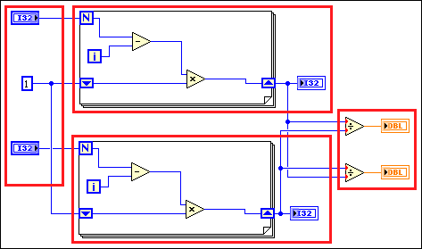

All the complex tasks of thread management are transparently built into the LabVIEW execution system. Text-based programmers must learn new, complex programming practices to create a multithreaded application. However, all LabVIEW applications are automatically multithreaded without any code modifications.
In addition to the preemptive multitasking of the operating system, LabVIEW employs a cooperative multitasking system. During compilation, LabVIEW analyzes VIs to find groups of nodes that can execute together in what are called clumps. Each priority and execution system combination has a run queue data structure that retains which clumps can run together. When the execution system activates a thread, the execution system retrieves and executes a clump from the run queue. When the execution system finishes executing, it stores additional clumps that meet the input conditions on the run queue, which allows the block diagram to execute in any of the available execution threads. If the block diagram includes enough parallelism, it can simultaneously execute in all threads.
LabVIEW does not permanently assign clumps of code to a particular thread. LabVIEW can execute a clump using a different thread the next time you run the VI.
The red rectangles in the following block diagram show an example of how LabVIEW groups nodes in clumps.

In this example, the block diagram has three different clumps because the clump of controls is the same as the clump of indicators. As a result, this clump executes at two different times. A clump sleeps, or delays, before and after it executes. After the first clump on the left executes, it sleeps while the two clumps with the For Loops execute. The right and left clump stops sleeping when the VI is ready to execute the operations in the clump of indicators.